The different faces of the main pavilion
The project is located on an abandoned railway lot in the Limoilou neighborhood of Québec. Vegetation has taken over the land, resulting in a “third landscape” used by the neighborhood's residents. This site includes both accessible beaten paths and dense areas of vegetation. The workshop’s goal was to create a shared place of worship using the potential of 3D printed concrete. The project's main idea was therefore to mark this natural site with a dispersed architectural intervention, which highlights the smallness of the visitor in the face of the uncaring nature through which they tread: this realization brings about moments of great spiritual potential.
A logic of gradients was used in every aspect of the project, first in its choice of location: based on a map of vegetation densities from our site survey, a linear path was isolated, going from an accessible environment (green) to a dense and secluded area (red). Four pavilions were placed at each degree of density along the path, ranging from a common space for celebrations to an intimate place for individual prayer or meditation.
The shape of each pavilion is inspired by the defining features of the atmosphere of the different environments along the path in order to bring the latter to light.
Site plan
The first sight one has of the project presents itself purely as a cavernous form opening up before the visitor.
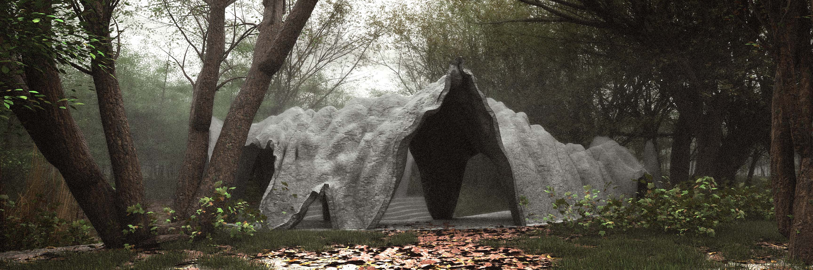 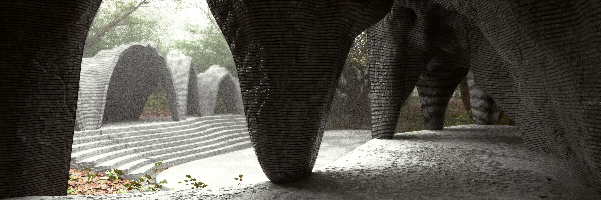 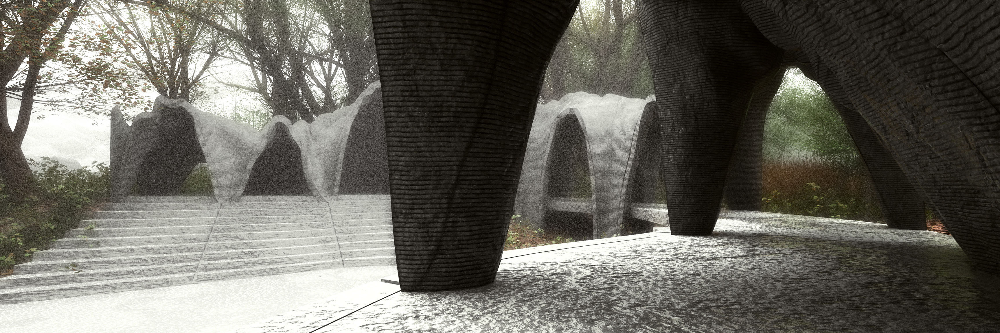 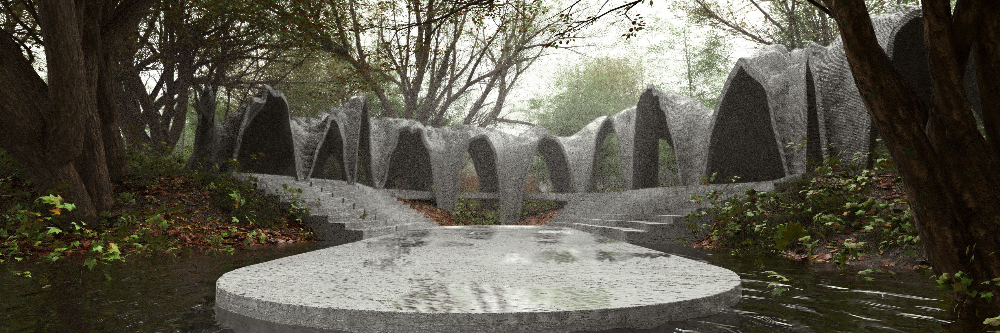The first pavilion resembles a sort of cloister, centered around a common platform, in dialogue with the canopy above.
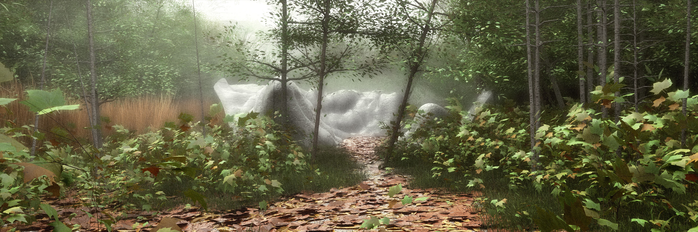 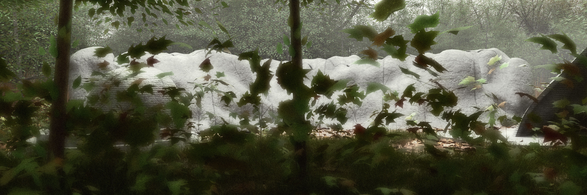 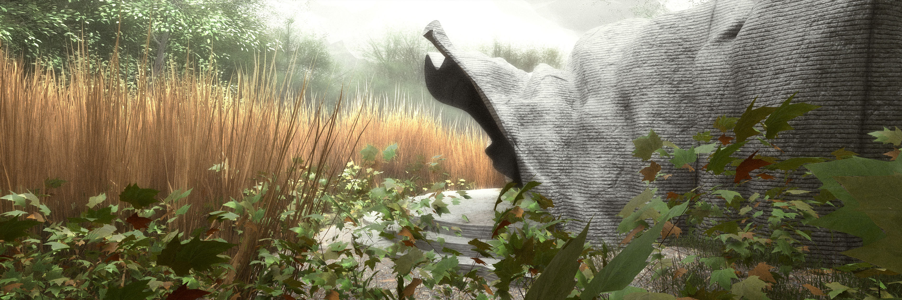 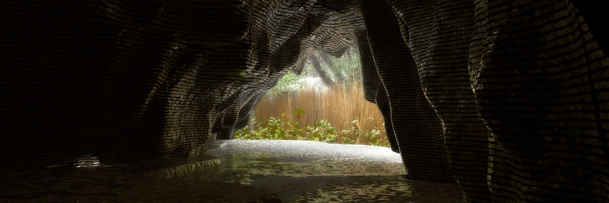The second pavilion is divided into two spaces, one open to the forest and the other more cavernous, framing views on the nearby swamp.
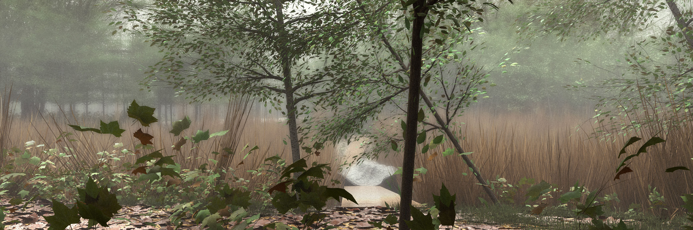 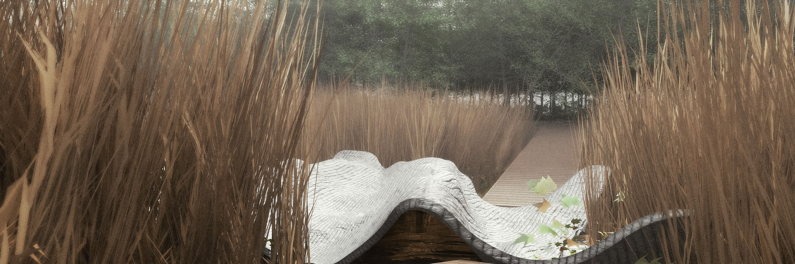Hidden among the plants of the swamp, the third space is the only one without walls. Its 'topography' makes it accessible to only two visitors, for intimate discussions.
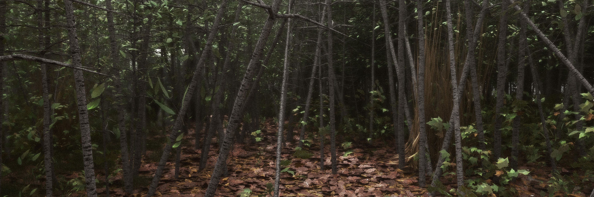 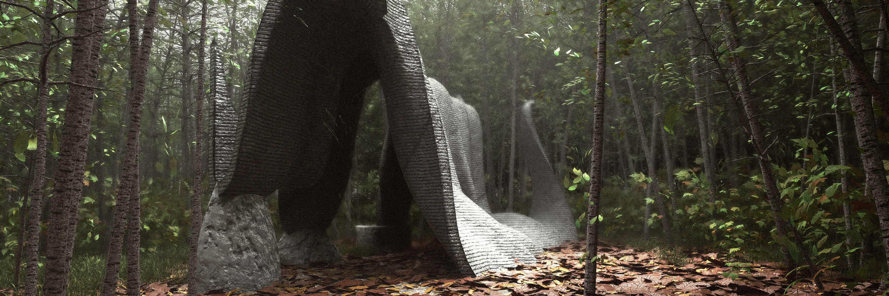The last space is located in a dense underbrush. Separated from the outside world by this vegetation, the visitor can meditate in peace.